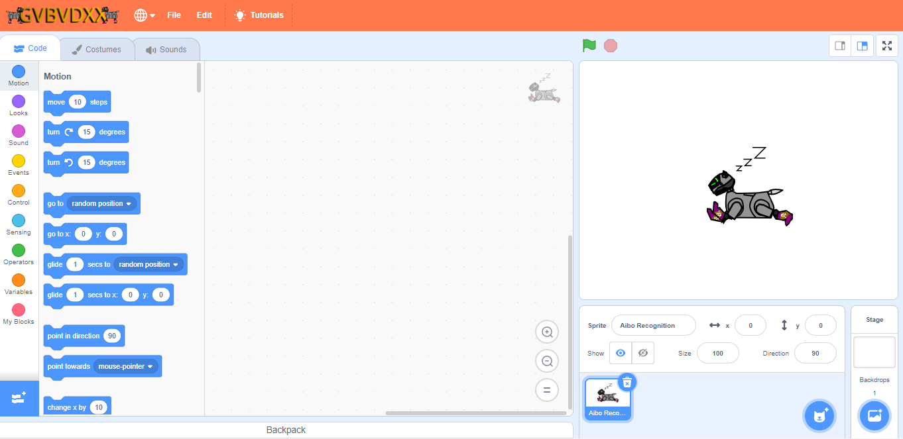

Gvbvdxx Mod
A mod of scratch by mit.
Adds Gamepad Support, Can Run Scripts, And Can Play Audio From A URL.
NOTICE:
Offline Version Is Not Being Updated Anymore.
Updates
*Added main page
*Removed the clone limntaions (May Break Some Projects)

Uploading Projects:
To do this, you need a gvbvdxx discuss account.
Then, go
here.